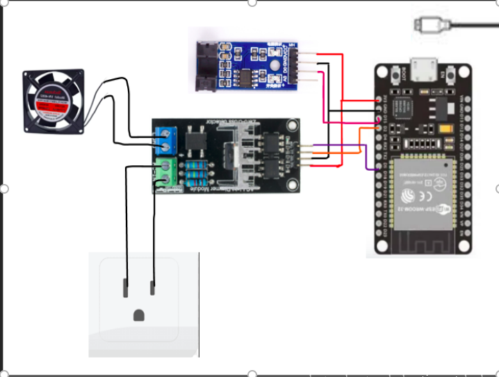
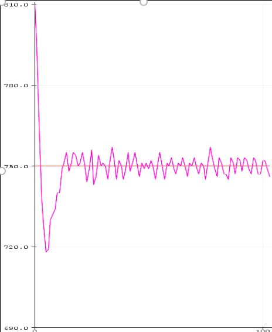

PID Speed Control of an AC Motor Using a Digital Switch and Duty Cycle
April 2026
Introduction
The objective of this project is to develop a closed-loop speed control system for an alternating current (AC) motor, using the ESP32 microcontroller as the main processing unit. A classic PID algorithm is implemented without the use of external libraries.
The system regulates the power supplied to the motor using phase control. To do this, it synchronizes an internal timer (hardware timer) with the zero-crossing of the mains power supply, calculating the exact trigger delay for a TRIAC.
An encoder is used as a feedback element to record the motor's pulses per second (PPS). The user interface is managed through the Serial Monitor, where the user can enter the desired Setpoint and observe the system's response in real time.
Project Description
The project's hardware is divided into the control stage (low voltage) and the power stage (high voltage from the electrical grid). The controller dynamically adjusts a delay angle (in microseconds) to maintain a constant speed in the face of mechanical disturbances.
Components Used
- ESP32 microcontroller
- 30-pin expansion module for ESP32
- AC Motor vn-382
- Dimmer Module AC 1 Channel 8A 110V/220V
- Speed sensor with encoder
Schematics and Control

Figure 1: Wiring diagram for the ESP32

Figure 2: PID control at a rate of 750 pulses per second
Video Demonstration
The following section describes the actual operation of phase control and the response of the PID algorithm to load variations.
Project Resources
The source code and technical documentation for this system are available free of charge.